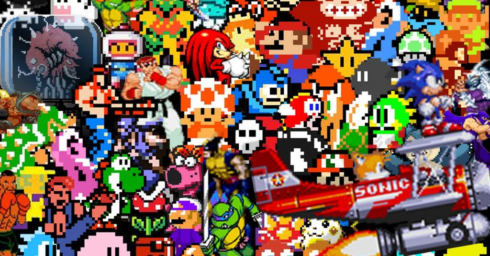
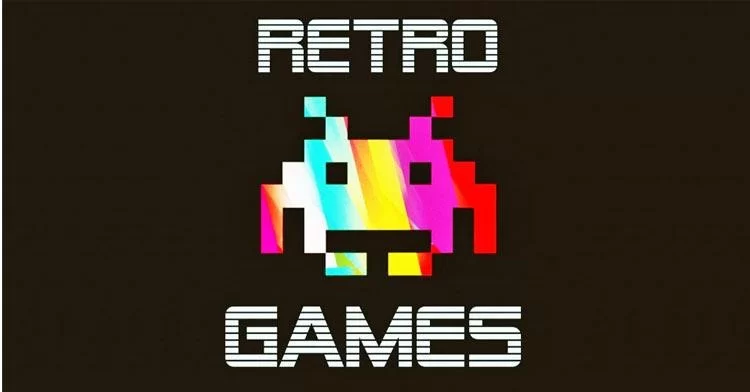
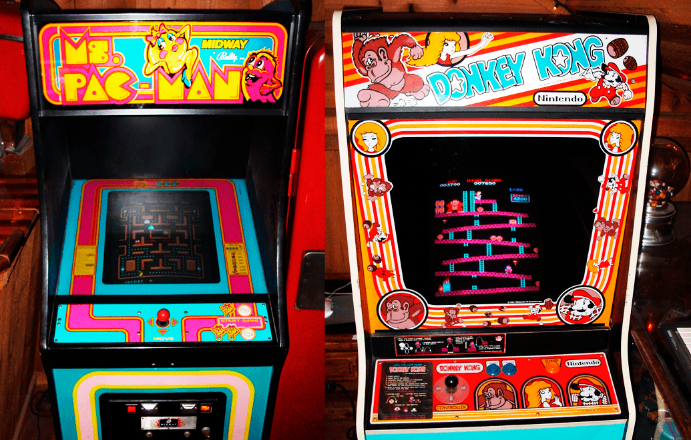
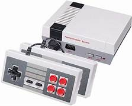

Videojuegos Retro

Los videojuegos retro son aquellos que se desarrollaron principalmente entre las décadas de 1970 y 1990. Se caracterizan por tener gráficos pixelados y una jugabilidad simple, debido a las limitaciones tecnológicas de la época. Estos juegos evocan nostalgia para muchos jugadores, ya que recuerdan sus infancias y adolescencias.
Suelen estar asociados con consolas clásicas como Atari, NES y Sega Genesis, y abarcan géneros variados, como plataformas, shooters y puzzles. Algunos ejemplos icónicos incluyen Pac-Man, donde los jugadores controlan a Pac-Man para comer puntos mientras evaden fantasmas; Super Mario Bros., un juego de plataformas que sigue las aventuras de Mario; y Tetris, un popular juego de puzzles que desafía a los jugadores a encajar piezas.
En la actualidad, los videojuegos retro han resurgido en popularidad. Muchos jugadores buscan revivir la experiencia de estos clásicos a través de consolas retro, emuladores o remakes. La comunidad de aficionados también colecciona y comparte información sobre estos juegos, manteniendo viva la esencia de esta parte de la historia de los videojuegos.


